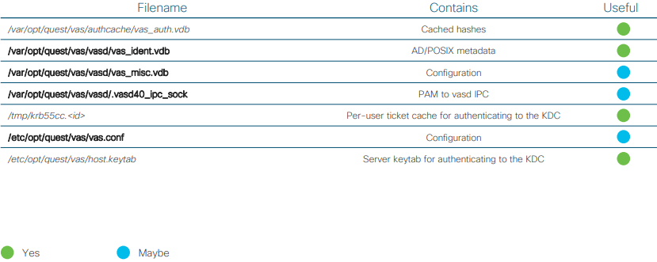

Proprietary, multi-platform
Potential attacks
• Stealing hashes from the file system
• Stealing hashes and plain text from memory
• Messing with the IPC
Notes for the blue team
• Runs as “daemon” but doesn’t drop real UID 0
• Has no compile time hardening
• Has no integration with SELinux
